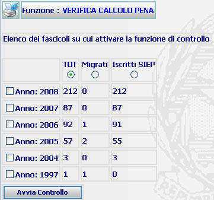
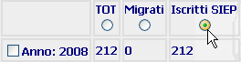
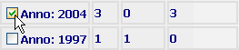

GENERALITA'
VERIFICA CALCOLO PENA: La funzione consente di verificare il calcolo della pena sui fascicoli dell'ufficio ed evidenziare nel Riepilogo Generale Dei Controlli sul Calcolo della Pena gli eventuali errori rilevati.
LE MASCHERE VIDEO
La funzione in esame viene realizzata attraverso l'utilizzo della seguente maschera che riporta gli elementi descrittivi della verifica; in particolare viene visualizzato il numero di fascicoli presenti nei vari anni e suddivisi in "Iscritti in Siep" e "Migrati", oltre al "Totale" di entrambi:

COME FARE PER ...
| Per effettuare una verifica sul calcolo della pena dei fascicoli dell'ufficio l'utente deve: |
Selezionare una delle tre opzioni a seconda se si vuole effettuare la verifica solo sui fascicoli iscritti in SIEP, solo sui fascicoli migrati o su entrambi (TOT);

Selezionare gli anni su sui si vuole effettuare la verifica;

Confermare le scelte inserite nella maschera agendo sul bottone . A fronte di questa operazione viene visualizzata la scheda del Riepilogo calcolo della pena.
CAMPI
Non sono presenti Campi in questa maschera.
PULSANTI
Oltre ai
pulsanti orizzontali dell'area
di navigazione, è presente
il pulsante
 di stampa del contesto (videata)
di stampa del contesto (videata)
BOTTONI
Oltre ai comandi funzionali relativi al menù verticale sono presenti i seguenti comandi:
|
COMANDI |
DESCRIZIONE |
|
|
A fronte di tale comando, il sistema dopo aver verificato la validità dei dati specificati, termina la funzione presentando la scheda del Riepilogo calcolo della pena |
CONTROLLI
A fronte della pressione del bottone , il sistema verifica la correttezza dei dati e visualizza un messaggio di errore nel caso che sia stato selezionato alcun anno sui cui effettuare la verifica:

Se il sistema non riscontrerà errori verrà visualizzata la maschera del Riepilogo calcolo della pena.